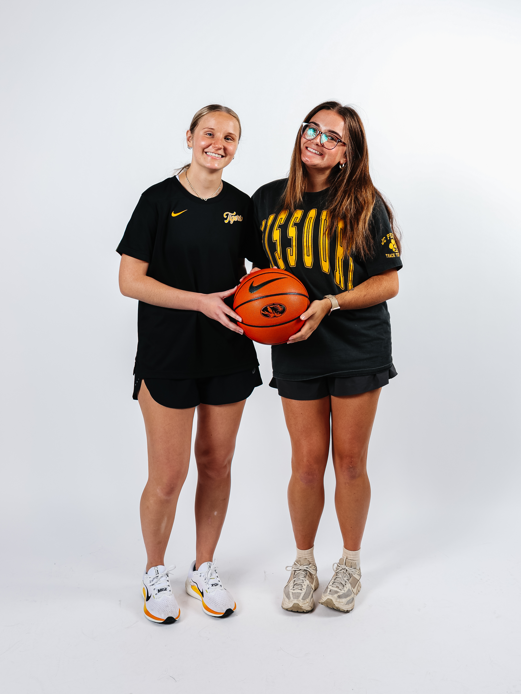

Videography Intern
University of Missouri | 2024-2025
- Shot a wide variety of sports including basketball, volleyball, softball, baseball, and golf
- Worked within a media team to complete assignments for the sports athletic departments
- Include: Shooting Game Content, Behind the Scenes, Interviews, Editing, Sound Design, etc.
Reflection
This videography role in a sports environment significantly strengthened both my technical and creative skills. Through hands-on experience, I learned how to film fast-paced athletic action, anticipate movement, and capture dynamic angles that enhance storytelling. I developed an understanding of how to create engaging content while maintaining a visual consistency that stayed on brand with various teams. Working closely alongside athletes and other creative professions taught me the importance of communication, adaptability, and collaboration in a high-energy setting.

Lead Videography Intern (Women's Basketball)
University of Missouri | 2025-Current
- Worked within a media team to complete assignments for women’s basketball related content
- Duties Include: Shooting Game Content, Social Content, Behind the Scenes, Interviews, Editing, Sound Design, etc.
Reflection
As a Lead Videography intern for Mizzou Women’s Basketball, I expanded on the foundational skills I developed in my previous role with Mizzou Athletics while taking on a greater creative responsibility. This position allowed me to work more closely behind the scenes where planning, organization, and brand consistency were essential. I played a larger role in creative direction, helping develop concepts that aligned with the team’s identity and mission. Throughout the role, I continued refining my technical skills in filming, shot selection, and content creation.

Super Sam Foundation
Fulton, MO | February, 2023
- Organized and executed a toy fundraiser benefiting the Super Sam Foundation in Fulton, MO
- Raised almost $500 and collected numerous toy donations, resulting in a van full of toys contributed to the foundation
- Supported the creation of care packages for children battling cancer in hospitals through the foundation’s outreach efforts
Reflection
This volunteer experience allowed me to take initiative and make a meaningful impact within my community. Alongside a friend, I helped organize and lead a toy fundraiser at my high school in support of the Super Sam Foundation. Through coordinated planning, promotion, and outreach, we raised nearly $500 in monetary donations and collected a van full of toys for the foundation. This experience strengthened my leadership, organization, and collaboration skills, but it more importantly reminded me of the importance in helping my community and taking the time to care for others.

Coaching Kids Boxing
ElmSt. Boxing Club | Jefferson City, MO | 2020-2022
- Instruct youth in boxing techniques 1-2 times per week in training sessions
- Promoted discipline, fitness, and confidence
Reflection
This volunteer coaching experience gave me the opportunity to positively impact youth through boxing and mentorship. As a coach, I worked with kids to teach the fundamentals of boxing while emphasizing discipline, fitness, and confidence. Beyond physical training, I focused on motivating and encouraging each child with a hope to build self-belief and resilience. Seeing firsthand how structure, consistency, and positive reinforcement inside the gym could translate to improved confidence outside of it was incredibly rewarding. This experience strengthened my communication, leadership, and mentorship skills with young athletes.